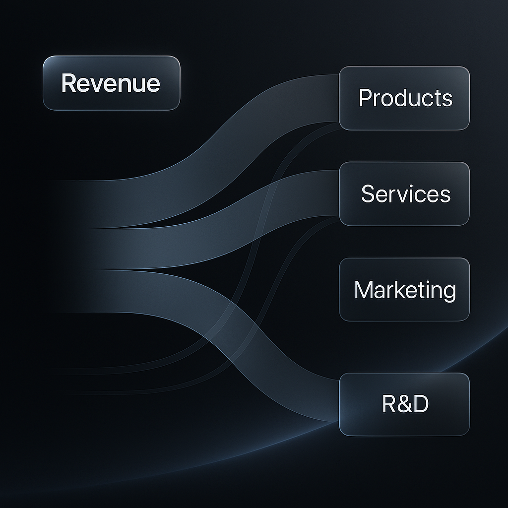
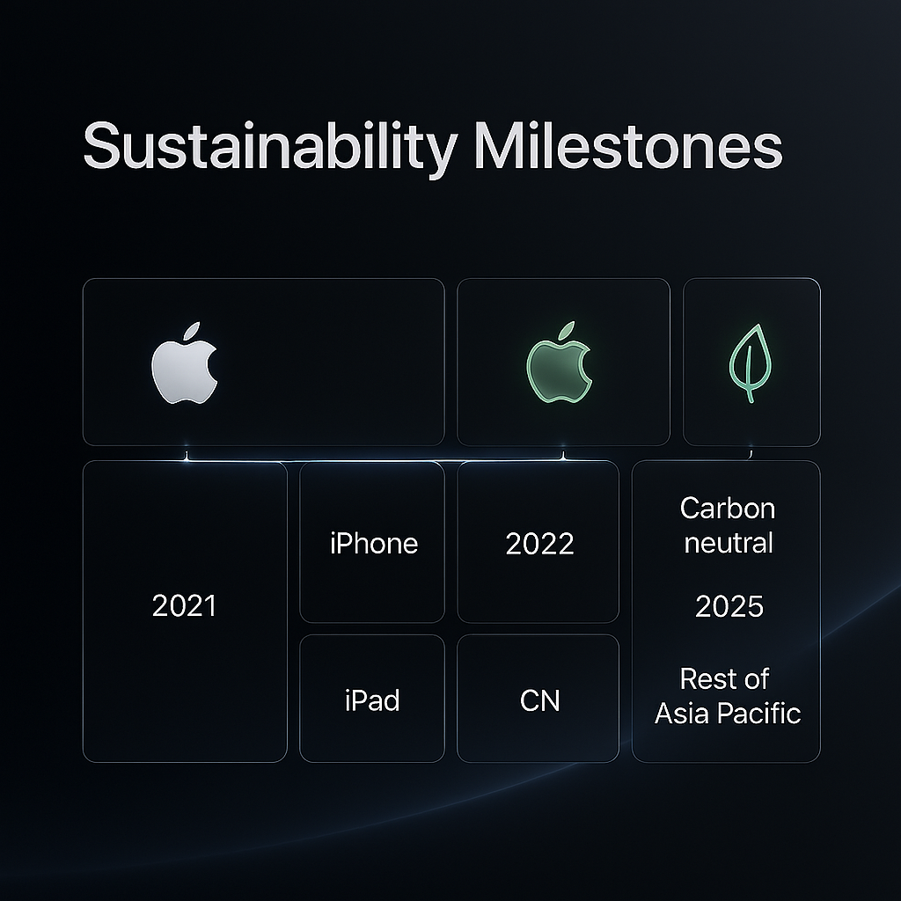

Executive Summary
Strategic benchmarking analysis of Apple Inc. for FY2024-25, integrating financial, UX, sustainability, and innovation metrics. Designed for consultants, recruiters, and strategists.
Author Profile
| Name | David S. Diaz |
| Role | Senior Corporate Benchmarking Consultant |
| Certifications |
🏆 NN/g UX Certified, 🔬 IBM Data Science, 🎨 Google UX Design, 📈 PMP® |
| LinkedIn |
linkedin.com/in/dsd228 |
Visual Analytics & Interactive Notebooks
Open in Colab
| Analysis Area | Description | Preview | Script |
| Revenue Breakdown |
Sankey: Product category FY2025 |
 |
code/Sankey.py |
| UX Benchmark |
Radar: Apple/Samsung/Google |
 |
code/RadarUX.py |
| Global Sales |
Treemap: By region |
 |
code/Heatmap.py |
| Sustainability Path |
Timeline: 2030 carbon neutral |
 |
code/ESG_Timeline.py |
Methodology
- Data Sources: SEC Filings, ESG Reports, Gartner/Forrester, JSTOR, APIs
- Techniques: Ratio/Regression/Forecasting, Heuristics, PESTLE, Content Analysis
- UX Standards: WCAG 2.2, ISO 9241-210
Apple Visual Palette
| Name | HEX | Swatch |
|---|
| Space Gray | #5f5f5f | ⬤ |
| Blue | #007aff | ⬤ |
| Green | #34c759 | ⬤ |
| Gold | #ffcc00 | ⬤ |
| White | #ffffff | ⚫ |
Repository Structure
/
├── assets/visuals/
├── code/
├── data/raw/
├── data/processed/
├── notebooks/apple_visuals_generator.ipynb
├── presentation/Apple_Benchmarking_FY24-25_Executive_Deck.pdf
└── README.md
Sustainability Commitment
- Goal: Carbon neutral by 2030 (business & supply chain)
- 100% renewable energy (operations achieved)
- 75% emission reduction by 2030 (2015 baseline)
- Carbon removal for remaining 25%
- Scope 1/2/3, recycled materials, water/energy efficiency
Resumen Ejecutivo
Análisis estratégico de benchmarking de Apple Inc. para 2024-25, integrando métricas financieras, UX, sostenibilidad e innovación.
Perfil del Autor
| Nombre | David S. Diaz |
| Rol | Senior Corporate Benchmarking Consultant |
| Certificaciones |
🏆 NN/g UX Certified, 🔬 IBM Data Science, 🎨 Google UX Design, 📈 PMP® |
| LinkedIn |
linkedin.com/in/dsd228 |
Visual Analytics & Notebooks Interactivos
Abrir en Colab
| Área de Análisis | Descripción | Vista Previa | Script |
| Revenue Breakdown |
Sankey: ingresos por categoría FY2025 |
|
code/Sankey.py |
| UX Benchmark |
Radar: Apple/Samsung/Google |
|
code/RadarUX.py |
| Global Sales |
Treemap: ventas por región |
|
code/Heatmap.py |
| Sustainability Path |
Timeline: neutralidad carbono 2030 |
|
code/ESG_Timeline.py |
Metodología
- Fuentes: SEC, ESG, Gartner/Forrester, JSTOR, APIs
- Técnicas: Ratios, Regresión, Forecasting, Heurística, PESTLE, Análisis de contenido
- UX: Cumplimiento WCAG 2.2, ISO 9241-210
Paleta Visual de Apple
| Nombre | HEX | Swatch |
|---|
| Space Gray | #5f5f5f | ⬤ |
| Blue | #007aff | ⬤ |
| Green | #34c759 | ⬤ |
| Gold | #ffcc00 | ⬤ |
| White | #ffffff | ⚫ |
Estructura del Repositorio
/
├── assets/visuals/
├── code/
├── data/raw/
├── data/processed/
├── notebooks/apple_visuals_generator.ipynb
├── presentation/Apple_Benchmarking_FY24-25_Executive_Deck.pdf
└── README.md
Compromiso de Sostenibilidad
- Meta: Carbono neutral para 2030 (empresa y cadena de suministro)
- 100% energía renovable (operaciones alcanzado)
- Reducción 75% emisiones para 2030 (base 2015)
- Eliminación de carbono para el 25% restante
- Scope 1/2/3, materiales reciclados, eficiencia hídrica/energética